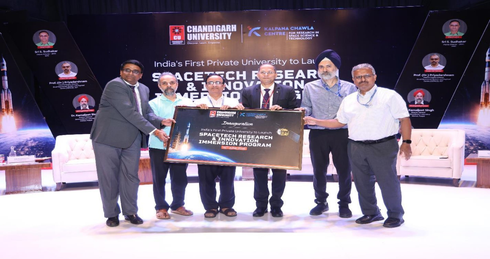
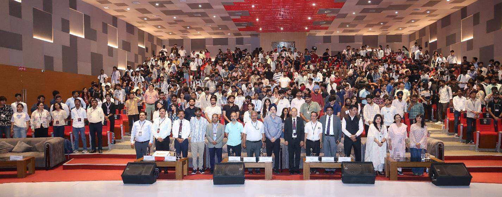
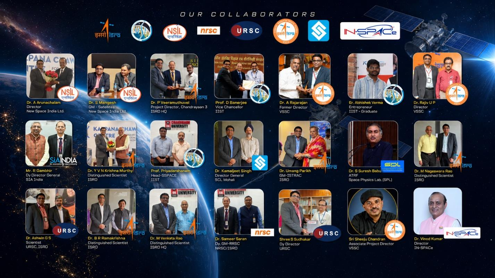
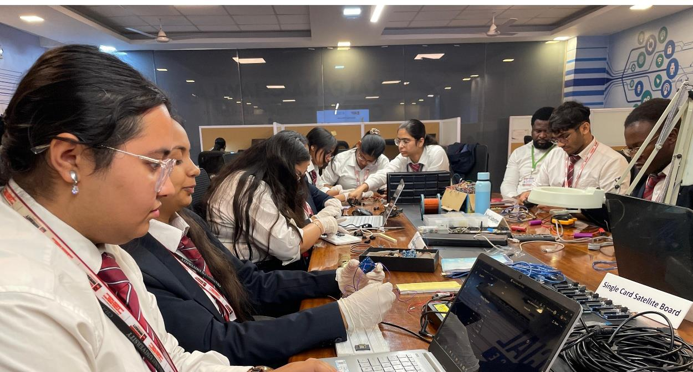
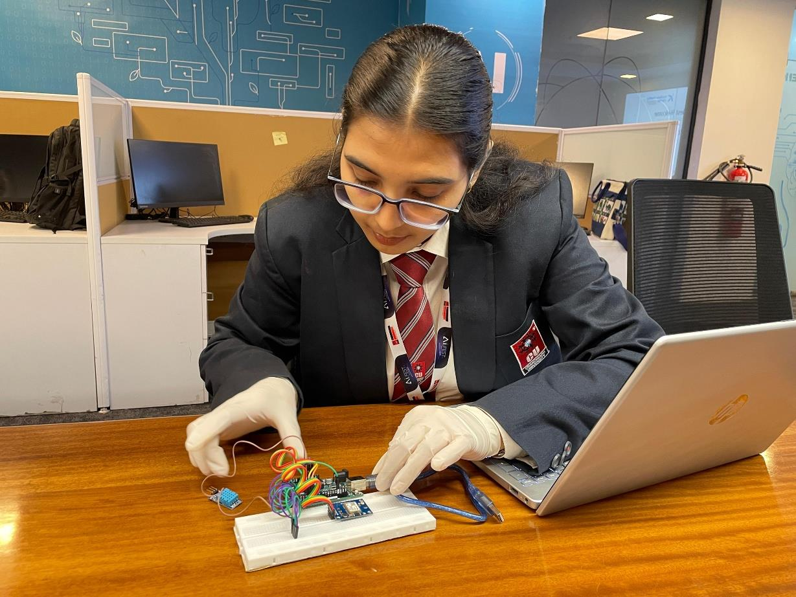
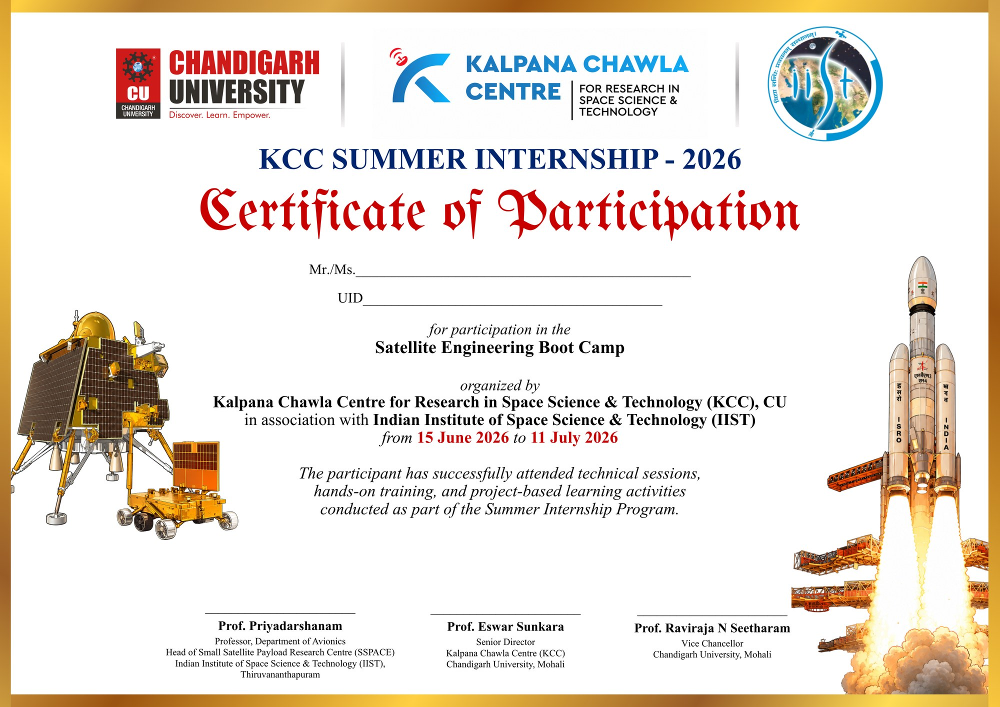
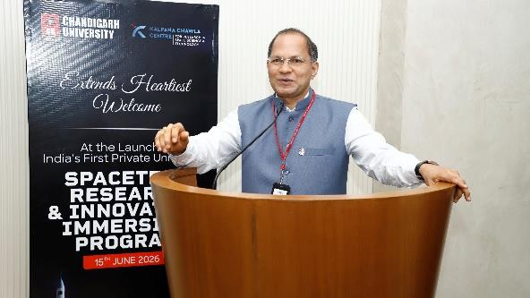
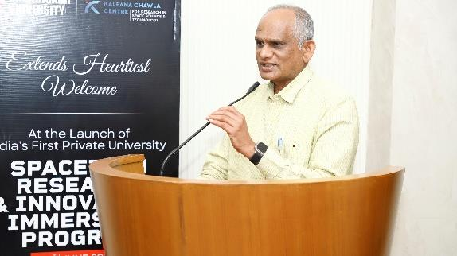
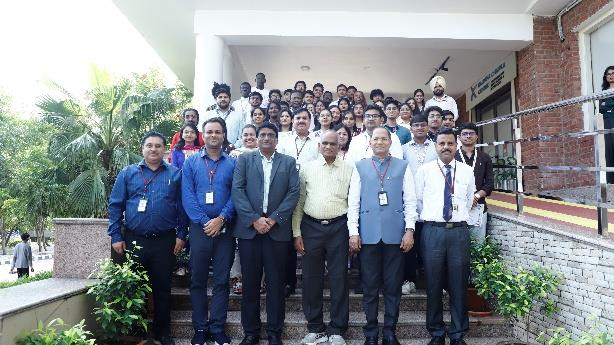

KCC Summer Internship Programme 2026
A flagship initiative developing a highly skilled, innovation-driven workforce capable of contributing to India's rapidly expanding space ecosystem.
Introduction
The Kalpana Chawla Centre (KCC) for Research in Space Science & Technology, Chandigarh University, successfully organized the KCC Summer Internship Programme 2026 from 15 June to 10 July 2026 under the CU Space Technology Initiative. The programme was conceived as a flagship initiative to develop a highly skilled, innovation-driven workforce capable of contributing to India's rapidly expanding space ecosystem.
With India's space sector undergoing unprecedented transformation through increased public-private participation, commercialization, and technological innovation, there is a growing need to equip students with multidisciplinary knowledge and practical skills in advanced space technologies. In response to this national need, the internship programme was designed to bridge the gap between academic learning and real-world engineering through experiential education, hands-on training, and direct interaction with experts from ISRO, the Indian Institute of Space Science and Technology (IIST), and other organizations under the Department of Space (DoS), Government of India.
The programme brought together 50 undergraduate and postgraduate students from diverse engineering and science disciplines for an intensive 25-day learning experience comprising more than 150 hours of expert lectures, laboratory sessions, hands-on satellite engineering activities, technical demonstrations, and multidisciplinary project-based learning.
Technology Domains Covered
Participants received training in Satellite Systems Engineering, Spacecraft Architecture, Embedded Systems, Artificial Intelligence for Space Applications, Remote Sensing, Ground Segment Technologies, UAV Systems, and other emerging space technologies, thereby strengthening both their technical competence and innovation capabilities.
Inaugural Ceremony
The KCC Summer Internship Programme 2026 was formally inaugurated on 15 June 2026, marking the launch of Chandigarh University's flagship initiative under the CU Space Technology Initiative. The programme was inaugurated by Shri Sudhakar, Distinguished Scientist and Deputy Director, U R Rao Satellite Centre (URSC), ISRO, who graced the occasion as the Chief Guest, in the esteemed presence of the Hon'ble Vice Chancellor, Prof. (Dr.) Raviraja N. Seetharam.

Dignitaries officially launching the KCC Summer Internship
The inaugural ceremony was attended by eminent scientists and experts from ISRO, the Indian Institute of Space Science and Technology (IIST), and the Semiconductor Laboratory (SCL), Government of India. The distinguished guests included:
- Shri Sudhakar, Distinguished Scientist & Deputy Director, URSC, ISRO
- Shri Jyothi Soman, Group Director, URSC, ISRO
- Dr. Kamaljeet Singh, Director General, SCL, Govt of India
- Prof. Priyadarshnam, Head SSPACE, IIST
- Er. Abhishek Verma, IIST
The inauguration also marked the commencement of the Satellite Engineering Boot Camp, conducted with the academic support of the Indian Institute of Space Science and Technology (IIST). This collaborative initiative laid the foundation for the intensive 25-day internship programme.
Programme Highlights
The KCC Summer Internship Programme 2026 was designed as an intensive, multidisciplinary training programme that combined academic learning with practical engineering experience.
25 Days
15 June – 10 July 2026
50 Undergraduate & Postgraduate Students
More than 150 Hours of Training
15+ Distinguished Scientists, Engineers & Industry Experts
Satellite Engineering Boot Camp in collaboration with IIST
Technology Domains Covered
Satellite Systems Engineering, Spacecraft Architecture, Embedded Systems, Artificial Intelligence, Remote Sensing & GIS, UAV Technologies, Ground Segment & TT&C, Mission Planning, Space Applications.
Key Highlights
- Successfully organized the first KCC Summer Internship Programme under the CU Space Technology Initiative.
- Conducted the first Satellite Engineering Boot Camp at Chandigarh University with academic support from IIST.
- Facilitated direct interaction between students and 15+ eminent scientists from India's leading space organizations.
- Delivered intensive hands-on training in satellite systems engineering and emerging space technologies.
- Strengthened strategic collaborations between Chandigarh University, ISRO, IIST, and other organizations under the DoS.
Academic and Technical Collaboration
One of the most significant achievements of the KCC Summer Internship Programme 2026 was the establishment of strong academic and technical collaborations with India's premier space organizations, research institutions, and strategic technology agencies.

Collaborating Organizations (DoS)
The internship programme was conducted with the active participation and academic support of distinguished scientists, engineers, academicians, and experts from organizations under the Department of Space (DoS), Government of India, including:
- Indian Space Research Organisation (ISRO)
- Indian Institute of Space Science and Technology (IIST)
- U R Rao Satellite Centre (URSC)
- Vikram Sarabhai Space Centre (VSSC)
- National Remote Sensing Centre (NRSC)
- ISRO Telemetry, Tracking and Command Network (ISTRAC)
- Indian National Space Promotion and Authorization Centre (IN-SPACe)
- NewSpace India Limited (NSIL)
- Semiconductor Laboratory (SCL), Government of India
Expert Mentorship
Throughout the programme, more than 15 distinguished scientists, engineers, and academicians delivered expert lectures, conducted technical demonstrations, mentored student projects, and interacted closely with students, faculty members, and the University leadership.
These interactions provided valuable insights into India's space missions, satellite technologies, launch vehicles, mission operations, remote sensing, satellite communications, quality assurance, semiconductor technologies, and the future of the Indian space sector.
Flagship Activity: Satellite Engineering Boot Camp
The Satellite Engineering Boot Camp was the flagship component of the programme, providing students with an immersive, hands-on learning experience in the design, development, and integration of satellite systems. It was conducted in academic collaboration with IIST, Thiruvananthapuram, under the leadership of Prof. Priyadarshnam and the IIST team.
Unlike conventional classroom-based training, the Boot Camp adopted a systems engineering approach, enabling students to understand the complete lifecycle of satellite development—from mission concept and system requirements to subsystem design, integration, testing, and mission operations.
The Boot Camp covered a wide range of topics, including:
- Mission Analysis and Systems Engineering
- Satellite Bus Architecture
- Payload Selection and Integration
- Structural and Thermal Design
- Electrical Power Systems (EPS)
- On-board Computer (OBC) and Flight Software
- Communication Systems and TT&C
- Attitude Determination and Control Systems (ADCS)
- Sensors, GPS, and Embedded Systems
- Antenna Design and RF Communication
- Ground Station Development
- Software Defined Radio (SDR) and GNU Radio


Joint Certification with IIST
A significant outcome of this initiative was the issuance of joint certificates by Chandigarh University and the Indian Institute of Space Science and Technology (IIST) for students who successfully completed the Satellite Engineering Boot Camp.
With the approval of the Hon’ble Vice Chancellor, Indian Institute of Space Science and Technology (IIST), the certificates carry the IIST logo in recognition of the academic collaboration and the valuable contribution of Prof. Priyadarshnam and the SSPACE, IIST team. This joint certification significantly enhances the academic value of the programme and reflects the growing partnership between the institutions.

Programme Outcomes & Impact
- Practical Exposure: Satellite Systems Engineering and spacecraft technologies.
- Competency Development: Systems engineering, payload integration, embedded systems, mission planning, remote sensing, AI, and ground systems.
- Experiential Learning: Enhanced technical capabilities through laboratory-based training.
- Vibrant Ecosystem: Created opportunities for direct interaction with eminent ISRO scientists and strengthened industry-academia-government collaboration.
- Strategic Foundation: Established a strong foundation for future initiatives such as CU-Sat, StratoSat, advanced Ground Station development, and student-led satellite missions.
The Kalpana Chawla Centre remains committed to nurturing future scientists, engineers, innovators, and entrepreneurs who will contribute to India’s vision of becoming a global leader in Space Science and Technology.
Valedictory Function & Conclusion
Valedictory Ceremony
The Valedictory Function was held on 10 July 2026 in the distinguished presence of Dr. M. Nageswara Rao, Distinguished Scientist and former Satish Dhawan Professor Scientist, ISRO, who graced the occasion as the Chief Guest.
During the programme, the achievements of the internship were presented, student projects and learning outcomes were showcased, and certificates were distributed to all participants. Dr. Nageswara Rao appreciated Chandigarh University's visionary initiative in establishing the Kalpana Chawla Centre as an emerging hub for space science.
Impact & Future Outcomes
- Created opportunities for direct interaction with eminent ISRO scientists.
- Promoted experiential and project-based learning.
- Strengthened industry-academia-government collaboration.
- Established a strong foundation for future initiatives such as CU-Sat, StratoSat, and advanced Ground Station development.


Event Gallery
A closer look at the activities, expert interactions, and collaborative teamwork during the internship.


